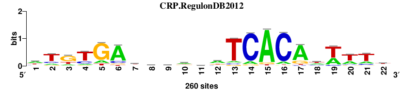
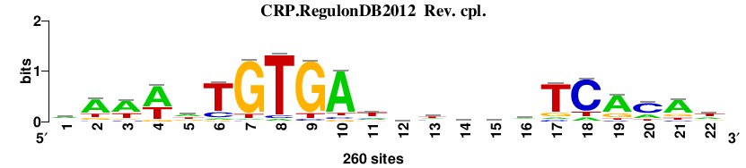
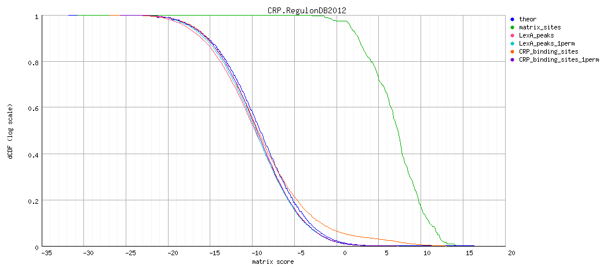
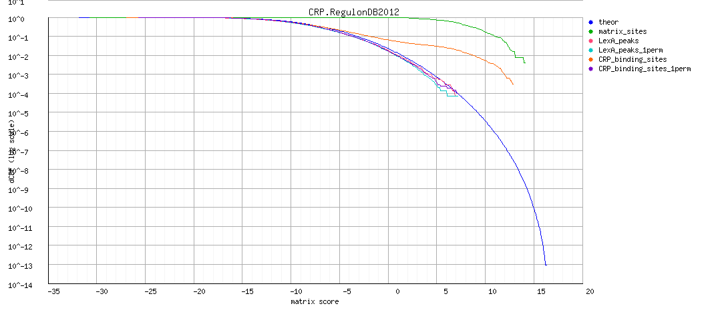
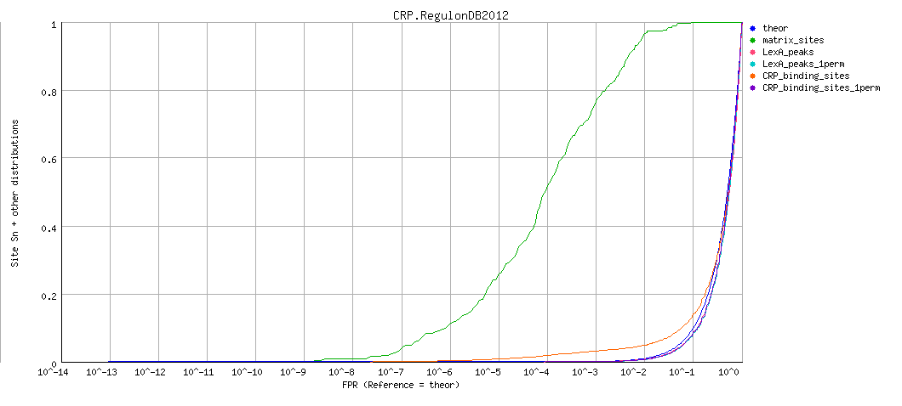
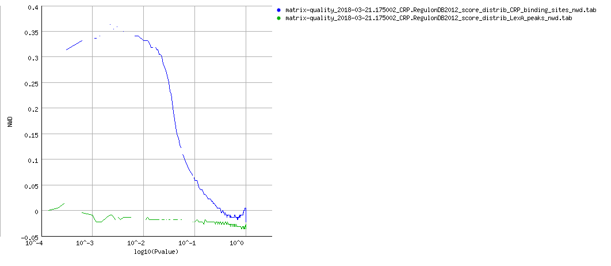

RSAT - matrix-quality result
Analysis: matrix-quality result: CRP.RegulonDB2012 (21/03/2018 17:50)
matrix-quality result: LexA and CTCF matrices from RegulonDB 2015 CRP.RegulonDB2012
Command: matrix-quality -v 0 -html_title ' LexA and CTCF matrices from RegulonDB 2015 ' -ms $RSAT/public_html/tmp/apache/2018/03/21/matrix-quality_2018-03-21.175002_zdBRpm/input_matrix -matrix_format transfac -pseudo 1 -seq LexA_peaks $RSAT/public_html/tmp/apache/2018/03/21/matrix-quality_2018-03-21.175002_zdBRpm/sequence1.fasta -seq_format fasta -plot LexA_peaks nwd -seq CRP_binding_sites $RSAT/public_html/tmp/apache/2018/03/21/matrix-quality_2018-03-21.175002_zdBRpm/sequence2.fasta -plot CRP_binding_sites nwd -perm LexA_peaks 1 -perm CRP_binding_sites 1 -bgfile $RSAT/public_html/data/genomes/Escherichia_coli_GCF_000005845.2_ASM584v2/oligo-frequencies/2nt_upstream-noorf_Escherichia_coli_GCF_000005845.2_ASM584v2-ovlp-1str.freq.gz -bg_format oligo-analysis -bg_pseudo 0.01 -archive -o $RSAT/public_html/tmp/apache/2018/03/21/matrix-quality_2018-03-21.175002_zdBRpm/matrix-quality_2018-03-21.175002
Figures
Matrix logo


Decreasing cumulative distributions (dCDF)

Decreasing cumulative distributions (dCDF), logarithmic Y axis

ROC curve (logarithmic X axis)

NWD curve

Matrix information
; convert-matrix -v 1 -from transfac -i $RSAT/public_html/tmp/apache/2018/03/21/matrix-quality_2018-03-21.175002_zdBRpm/CRP.RegulonDB2012/matrix-quality_2018-03-21.175002_CRP.RegulonDB2012_matrix.tf -to tab -o $RSAT/public_html/tmp/apache/2018/03/21/matrix-quality_2018-03-21.175002_zdBRpm/CRP.RegulonDB2012/matrix-quality_2018-03-21.175002_CRP.RegulonDB2012_matrix_info.txt -bgfile $RSAT/public_html/tmp/apache/2018/03/21/matrix-quality_2018-03-21.175002_zdBRpm/matrix-quality_2018-03-21.1750022nt_upstream-noorf_Escherichia_coli_GCF_000005845.2_ASM584v2-ovlp-1str.freq.gz_inclusive.tab -bg_format inclusive -return counts,frequencies,weights,info,parameters,sites,logo -logo_format png -logo_opt '-e -M -t CRP.RegulonDB2012 ' -logo_file $RSAT/public_html/tmp/apache/2018/03/21/matrix-quality_2018-03-21.175002_zdBRpm/CRP.RegulonDB2012/matrix-quality_2018-03-21.175002_CRP.RegulonDB2012_logo
; Input files
; input /space23/rsat/public_html/tmp/apache/2018/03/21/matrix-quality_2018-03-21.175002_zdBRpm/CRP.RegulonDB2012/matrix-quality_2018-03-21.175002_CRP.RegulonDB2012_matrix.tf
; prior /space23/rsat/public_html/tmp/apache/2018/03/21/matrix-quality_2018-03-21.175002_zdBRpm/matrix-quality_2018-03-21.1750022nt_upstream-noorf_Escherichia_coli_GCF_000005845.2_ASM584v2-ovlp-1str.freq.gz_inclusive.tab
; Input format transfac
; Output files
; output /space23/rsat/public_html/tmp/apache/2018/03/21/matrix-quality_2018-03-21.175002_zdBRpm/CRP.RegulonDB2012/matrix-quality_2018-03-21.175002_CRP.RegulonDB2012_matrix_info.txt
; Output format tab
; pseudo-weight 1
; Background model
; Strand undef
; Background pseudo-frequency 0.01
; Residue probabilities
; a 0.29114
; c 0.20781
; g 0.20402
; t 0.29702
A 110 37 37 26 34 192 63 67 52 112 50 129 18 25 231 22 190 86 90 71 51 57
C 43 39 16 48 5 32 47 83 71 32 77 37 15 221 2 224 13 60 19 22 34 41
G 27 23 146 18 195 18 45 41 47 57 79 41 15 12 15 6 41 20 0 20 16 50
T 80 161 61 168 26 18 105 69 90 59 54 53 212 2 12 8 16 94 151 147 159 112
//
A 0.4 0.1 0.1 0.1 0.1 0.7 0.2 0.3 0.2 0.4 0.2 0.5 0.1 0.1 0.9 0.1 0.7 0.3 0.3 0.3 0.2 0.2
C 0.2 0.2 0.1 0.2 0.0 0.1 0.2 0.3 0.3 0.1 0.3 0.1 0.1 0.8 0.0 0.9 0.1 0.2 0.1 0.1 0.1 0.2
G 0.1 0.1 0.6 0.1 0.7 0.1 0.2 0.2 0.2 0.2 0.3 0.2 0.1 0.0 0.1 0.0 0.2 0.1 0.0 0.1 0.1 0.2
T 0.3 0.6 0.2 0.6 0.1 0.1 0.4 0.3 0.3 0.2 0.2 0.2 0.8 0.0 0.0 0.0 0.1 0.4 0.6 0.6 0.6 0.4
//
A 0.4 -0.7 -0.7 -1.1 -0.8 0.9 -0.2 -0.1 -0.4 0.4 -0.4 0.5 -1.4 -1.1 1.1 -1.2 0.9 0.1 0.2 -0.1 -0.4 -0.3
C -0.2 -0.3 -1.2 -0.1 -2.3 -0.5 -0.1 0.4 0.3 -0.5 0.4 -0.4 -1.3 1.4 -3.2 1.4 -1.4 0.1 -1.0 -0.9 -0.5 -0.3
G -0.7 -0.8 1.0 -1.1 1.3 -1.1 -0.2 -0.3 -0.1 0.1 0.4 -0.3 -1.3 -1.5 -1.3 -2.1 -0.3 -1.0 -5.6 -1.0 -1.2 -0.1
T 0.0 0.7 -0.2 0.8 -1.1 -1.4 0.3 -0.1 0.2 -0.3 -0.4 -0.4 1.0 -3.5 -1.8 -2.2 -1.6 0.2 0.7 0.6 0.7 0.4
//
A 0.2 -0.1 -0.1 -0.1 -0.1 0.7 -0.0 -0.0 -0.1 0.2 -0.1 0.3 -0.1 -0.1 1.0 -0.1 0.7 0.0 0.1 -0.0 -0.1 -0.1
C -0.0 -0.0 -0.1 -0.0 -0.0 -0.1 -0.0 0.1 0.1 -0.1 0.1 -0.1 -0.1 1.2 -0.0 1.2 -0.1 0.0 -0.1 -0.1 -0.1 -0.0
G -0.1 -0.1 0.6 -0.1 1.0 -0.1 -0.0 -0.0 -0.0 0.0 0.1 -0.0 -0.1 -0.1 -0.1 -0.1 -0.0 -0.1 -0.0 -0.1 -0.1 -0.0
T 0.0 0.5 -0.1 0.5 -0.1 -0.1 0.1 -0.0 0.1 -0.1 -0.1 -0.1 0.8 -0.0 -0.1 -0.1 -0.1 0.1 0.4 0.4 0.4 0.2
//
; Sites 260
>site_0
ATGTGATTCATATCACATATTT
>site_1
CTGTGATTGGTATCACATTTTT
>site_2
ATGTGATCCAGATCACATCTAT
>site_3
ATCTGACTCACATCACACTTTT
>site_4
ATGTTATCCACATCACAATTTC
>site_5
ATTTGATACCCATCACACTTTC
>site_6
ATGTGATTTTCATCACGATTTA
>site_7
ATGTGATTAACAGCACATTTTT
>site_8
ATGTGAGTAGTGTCACATTTTT
>site_9
ATGTGATTTGCTTCACATCTTT
>site_10
GTGTGAAGTTGATCACAAATTT
>site_11
ATGTGATACAAATCACATAAAT
>site_12
GTGTGATCGTCATCACAATTCG
>site_13
ATGAGATTTTCATCACACATTT
>site_14
AAGTGATTTAGATCACATAATA
>site_15
GTGTGATCTGCATCACGCATTA
>site_16
ATGTGTACGAAATCACATTTTT
>site_17
TTTTGACATGTATCACAAATTT
>site_18
TTGTGATTCAGATCACAAAGAT
>site_19
ACGTGATCTTCATCACAAATAA
>site_20
TCGTGATCAAGATCACATTCTC
>site_21
ACGTGATGATGTTCACAATTTG
>site_22
ATTTGAAGTAGCTCACACTTAT
>site_23
ATTTGATTTAGATCGCAATTTG
>site_24
TTGTGATTCGATTCACATTTAA
>site_25
ATGTGATTGATATCACACAAAA
>site_26
ATGCGATTCCACTCACAATATT
>site_27
AAGTGACCGAAATCACACTTAA
>site_28
ATGAGATTCAGATCACATATAA
>site_29
GAGTGACGTAGATCACACTTAT
>site_30
CTTCGATACACATCACAATTAA
>site_31
ATTTGAAGTTCATCACACTTCA
>site_32
CGGTGATCTATTTCACAAATTA
>site_33
ATGCGATCTATATCACGCTGTG
>site_34
ATTTGTTCCTCTTCACATTTTT
>site_35
ATTTGCACGGCGTCACACTTTG
>site_36
ATGTGAAATAAATCAAAATTTC
>site_37
TAGTGATCCACGCCACATTTTG
>site_38
TTGCGATCAAAATAACACTTTT
>site_39
TTGTGAATCTTTTCACAGTTTA
>site_40
ATTCAATATTCATCACACTTTT
>site_41
AAGTGATGCAAATCACATAAAT
>site_42
TCGTGAACTACGGCACACTTTG
>site_43
TTATGACCCTCTTCACATTTCG
>site_44
GTGTGATGCAAGCCACATTTTT
>site_45
ATGTGAGCGAGATCAAATTCTA
>site_46
ACGTGACGTTCATCACAAAACG
>site_47
ATGTGAATTGCCGCACACATTA
>site_48
ATGTGAGTTAGCTCACTCATTA
>site_49
AGGTGAGATGCATCACGCTTCG
>site_50
AGGTGACCGGTTTCACAAATAT
>site_51
CTGTGAGTGATTTCACAGTATC
>site_52
TTGTTATTAGTCTCACACTTTT
>site_53
GTGCGAGCCAGCTCAAACTTTT
>site_54
ATATGACGGCGGTCACACTTAT
>site_55
ATGCGATCTGGTTCAAATAATT
>site_56
TTTCGAGGTTGATCACATTTCC
>site_57
ATGTGCGACCACTCACAAATTA
>site_58
AGGTGAGAGCCATCACAAATGT
>site_59
ATGTGAGCCAGCTCACCATAAA
>site_60
ATGAGATCGAGCACACATTTTA
>site_61
ATGTGAAGCAAATCACCCACTT
>site_62
ATTTGAGTAAGTTCTCAATTTT
>site_63
TTGTGAGCTTGCTCGCACTTCG
>site_64
TTATGACGCTCTTCACACTCTG
>site_65
ATGCGCGACGCATCGCAAATTT
>site_66
ATATGACAACCATCACAAAAAT
>site_67
CTGTAACAGAGATCACACAAAG
>site_68
TAGTGAAGCAGATCGCATTATA
>site_69
TATTGTCCCCGATCACACTTTT
>site_70
CCATGATCCGCGCCACACTTTT
>site_71
CAGTGATCCAGGTCACGATAAC
>site_72
GTTAAATATAGATCACAATTTT
>site_73
TATAGATCTCCGTCACATTTTT
>site_74
ATGTGACTACCATCACTTTAAT
>site_75
TTGCGAAGCGCGTCACTATTTA
>site_76
ATATGACGGTGTTCACAAAGTT
>site_77
ATTTGCACTGTGTCACAATTCC
>site_78
TTGTGATCGTTATCTCGATATT
>site_79
TTGCAAGCAACATCACGAAATT
>site_80
GTGTTAAATTGATCACGTTTTA
>site_81
TTGCGAGCGAGCGCACACTTGT
>site_82
ATTTATTCCATGTCACACTTTT
>site_83
TAGAGATCTACTTCACAAATCA
>site_84
TTTTGCGCGAGGTCACTATTTT
>site_85
TTGCGGGTCGCGTCACATTTAA
>site_86
AGGTGATTTTGATCACGGAATA
>site_87
TTTTGAATCCCATCACAAACCC
>site_88
CTGTGGTTGCCATCACAGATAT
>site_89
TTGTGGCCTGCTTCAAACTTTC
>site_90
AAGTGAACCATATCTCAATTCA
>site_91
TTATGAAGCCCTTCACAGAATT
>site_92
GTGCGGGCGTGATCACAATTAC
>site_93
CTGTGACTCGATTCACGAAGTC
>site_94
ACGCGACTTTTATCACTTTTTA
>site_95
CGGTGACGGAGTTCACCCTTTA
>site_96
TTGCAATTCGTGTCACAAAATA
>site_97
TTACGACAGCTATCACGAATTT
>site_98
ATTTGAAGCAGTTAACGCTATT
>site_99
ACATGAGCAACCGCACATATTT
>site_100
CTGCGAGTGGGAGCACGGTTTT
>site_101
TTTTGCGCTAAAGCACATTTCT
>site_102
GTGCGAAATCCGTCACAGTTCA
>site_103
TTGTGATGTGGTTAACCAATTT
>site_104
TCGTGAACGATCCCACGAATTT
>site_105
CTGCGAGCATGGTCATATTTTT
>site_106
GAGTGATATGTATAACATTATG
>site_107
ATATGACCAACCTCTCATAATT
>site_108
ATGCAAAGGACGTCACATTACC
>site_109
GAGTGATCGAGTTAACATTGTT
>site_110
TGGTGAGGAACTTAACAATATT
>site_111
TTGAGATTCAACTCTCAAATTT
>site_112
TTGTGAATCAGATCAGAAAACC
>site_113
ATGTATGACAGATCACTATTTT
>site_114
ATATGATAAATATCAAACAATG
>site_115
ATGTAAGCTGTGCCACGTTTTT
>site_116
TTGTGAGTTTTGTCACCAAATA
>site_117
TTGCGATGAATGTCACATCCTC
>site_118
TTATGACGAGGCACACACATTT
>site_119
TTGAGGGGTTGATCACGTTTTG
>site_120
TGTTGCTTTTGATCACAATAAG
>site_121
TCGTGACAGGAATCACGGAGTT
>site_122
GCTTGAGCCGCAGCACAATGTG
>site_123
GTTTGACGGCTATCACGTTTCA
>site_124
ATTTAATTCGTATCGCAAATTA
>site_125
TGGTGATCCATAAAACAATATT
>site_126
CCGTGAAAGCGATCACAAAGGG
>site_127
TCGTGATACTCATCACCATGAC
>site_128
ATGTGATCTACAGCATGTTATG
>site_129
GCGTGCCAGTTTTCACATTCTT
>site_130
TCTTGCTTACCGTCACATTCTT
>site_131
CAGTGACAGATTTCACGAAAAT
>site_132
GGTTGCACTCTCTCACATTTTT
>site_133
GCCTGACGGAGTTCACACTTGT
>site_134
TCATGAAACTGTGCACATTTTA
>site_135
GCAGGATTTAGCTCACACTTAT
>site_136
ACGCAGCGAAGATCACAATTTA
>site_137
CATTTAAACAGATCACAAAATC
>site_138
TATTGATCTAACTCACGAAAAT
>site_139
TTACAAGGCACATCACGTTATG
>site_140
CTGTGACCGTGGTCGCAGTTGG
>site_141
TTGGAATATCCATCACATAACG
>site_142
ATATGCGCGAAATCAAACAATT
>site_143
GTGCGAGTCTGCTCGCATAATC
>site_144
ATGTGACAGATAAAACGTTTTA
>site_145
AATTGACCGATGCCACGTTTTG
>site_146
ATATGTTTCGTTTCACAGTTCT
>site_147
ATGTGCGCATCTCCACATTACC
>site_148
ATGTTAATTTCCTCACATCGTG
>site_149
ATGCGGTGAGCATCACATCACC
>site_150
ACGAGATCTGACACACACTATA
>site_151
CAGCGACATCTGTCACATTCCT
>site_152
TTGGGCGACAGATCACGCAAAA
>site_153
TTTTGAATCGTGTCTCATTCTG
>site_154
GTGAGGCATAAATCACATTACG
>site_155
TCGTGATATTGCTCACGCCAAA
>site_156
TTCTAATAGCCATCACAAAACG
>site_157
TTGTGGATAAAATCACGGTCTG
>site_158
CTCTGAGATGGATCAAAGAATT
>site_159
CTTAGAAACCGATCACATACAG
>site_160
AATCGATTGCGTTCACGTTTAC
>site_161
TATTGATTTAAATCAAAGATTC
>site_162
AATTGAACCAAATCATAAAATC
>site_163
ATTGAACCCCGATCACACCATA
>site_164
TAATGAAAAGGATGACATATTC
>site_165
ACTTGCGTGACTACACATTCTT
>site_166
AGCAGATACAACTCACACAATG
>site_167
CTGTGCTGCGCATAATACTTTG
>site_168
CCATGCTCAATCTCACAAAGTG
>site_169
ATTCGACAAAGCGCACAATCCG
>site_170
ACAGGAAGCACATCACAAAGAC
>site_171
ATTTGCCACAGGTAACAAAAAA
>site_172
TACGGATCTTCATCACATAAAA
>site_173
CTGTGACAAGCTCCGCAAATCG
>site_174
CAACGCTTTGGCTCACAGTTTA
>site_175
ACAAAACATATGTCACAATATT
>site_176
ATATGATCTATATCAATTTCTC
>site_177
CTGTTGATATGATCACGTTATA
>site_178
TTTAGATGTAAATCACTCCATT
>site_179
ATGTGAAATAAAACAATTATTT
>site_180
ACCTGTCACAAATCACAAAAAG
>site_181
TAGTGCTCAGCGACACTATTTT
>site_182
TTCTTATCTACCTCACAAAGGT
>site_183
CTGTGCGCGCAACGACATTTTG
>site_184
TTACAAAATTGTTAACAATTTT
>site_185
ATTTTAACAACTTGACATATAT
>site_186
CTTCGTAACGCCTCGCAAATTT
>site_187
AACCTCTTTGCGTCACATTTTT
>site_188
TTTTGTAACAATTCAAACTTCT
>site_189
TCAGGCGTTAAATCACGTTTTC
>site_190
TTCATCTCTATGTCACATTTTG
>site_191
TTGTTACCTGCCTCTAACTTTG
>site_192
ATGTGATATTGCTCTCCTATGG
>site_193
ACGTTAACTGAAACGCATATTT
>site_194
TATTGATGTAAATCAAATTCAC
>site_195
CCATGAAACGGAACACGAAAAT
>site_196
ATAATAATCTAATCACATCTTG
>site_197
TGGTGCGCATGATAACGCCTTT
>site_198
GTGCAGGCTTGATCACAACTCC
>site_199
AGGTAATTCGAATGACATTGCT
>site_200
CTGGGATGAAAGTGACATTTGA
>site_201
CCGACGAATAGATCACAATTTA
>site_202
ATTAGTAAGTTATCACCATTTG
>site_203
CTGTGATAGTGTCATCATTTTC
>site_204
GCTTAATTTAAATAACAAAATC
>site_205
ATGTGATGAGAAAGTCAATTTG
>site_206
TGACGCATGAAATCACGTTTCA
>site_207
ATGCAAAATCAAAAACAATTTC
>site_208
AATCGATTTAACACACCATTTA
>site_209
TTGTAAACAGATTAACACCTCG
>site_210
CAGTTATTTTTAACAAATTTTT
>site_211
TGTTGCTGACCTTCAAAAATTA
>site_212
TTGTCATCTTTCTGACACCTTA
>site_213
AAGTTCGATATTTCTCGTTTTT
>site_214
CTGGAACGCTTTTCGCATTCTG
>site_215
ACCCGCTTTAAAACACGCTATC
>site_216
GTTTGACATTGTTCTCTCACTT
>site_217
CCTCGGTTTAGTTCACAGAAGC
>site_218
TAGTTACATGTTTAACACTTGA
>site_219
ATCTGGGTAGCATCACAGCAGA
>site_220
AGGCGACCTGGGTCATGCTGAA
>site_221
ATCTTGAAATAATCACATTGAT
>site_222
ATTGTTATCCGCTCACAATTCC
>site_223
TGTGGAAATTAATCCCACTATT
>site_224
CTGCATATTAATTGACATTTCT
>site_225
CGGGTATTAGCACCACATATAA
>site_226
ATGTAATAAAATTCATGGTAAT
>site_227
TTTTACTTTTGGTTACATATTT
>site_228
TCTTTATCTTTGTAGCACTTTC
>site_229
ACGCGCACTATGTCAACTCTTG
>site_230
CAATGAAAAATTGCACAGTAAA
>site_231
GTTAAATTGATGTAACATAATC
>site_232
TTGAGTCATAAATAACCTTTAG
>site_233
AGGTGAATCGCGCCAGCAAATT
>site_234
CTGAGACTAGTACGACTTTTTG
>site_235
AGTTGTAACTATGCACAAATGT
>site_236
CCCCATGGCAGATGACATTTTT
>site_237
AAAATATCCTTGTCACATTCGT
>site_238
ATGTAAATTGGTCAACCATTGT
>site_239
ACACTATGAGCAAAACACATTT
>site_240
ATTTAATCATGTTTACAGTAAT
>site_241
CTGGGAGCAGGCTCGATTTATG
>site_242
ACATGATAAATTTGACGAAGAA
>site_243
CAGTGAACCCCTTCCCAACCAC
>site_244
GAATGCTAATCATCAGAAATGT
>site_245
TTTGGGTTGTTATCAAATCGTT
>site_246
TGTAAATCTGCATCGGAATTTG
>site_247
TTCATACCACCATCACAACCAC
>site_248
TATTTAACGCCGTCAGAAATGT
>site_249
AAGGTGACTATACCACACTCAT
>site_250
TTAGCAAATACCTCACAGTGAA
>site_251
CTGCAACCATCTACAAATAACC
>site_252
CGGGTAATAACAACACTCATAT
>site_253
TTTCCTGAAAATTCACGCTGTA
>site_254
ATTTAATGAAGAGAATTTTTTT
>site_255
CTGCGTGAAGCAGCAGTAAATC
>site_256
ACAGGCACCTGATAAAGCCATT
>site_257
GGCAAGTGGTATTCGCACTTTT
>site_258
GTACGTTTGCAGTGAAATAACT
>site_259
ATAACAAAATCCTAATGTTATT
;
; Matrix parameters
; Number of sites 260
; Columns 22
; Rows 4
; Alphabet A|C|G|T
; Prior A:0.291144263562772|C:0.207810681831126|G:0.204024081631615|T:0.297020972974487|a:0.291144263562772|c:0.207810681831126|g:0.204024081631615|t:0.297020972974487
; program transfac
; matrix.nb 1
; accession CRP.RegulonDB2012
; AC CRP.RegulonDB2012
; id CRP.RegulonDB2012
; name CRP.RegulonDB2012
; description wtGtGatcyrsaTCACahwttt
; statistical_basis 260 sequences
; sites 260
; nb_sites 260
; min.prior 0.204024
; alphabet.size 4
; max.bits 2
; total.information 7.08969
; information.per.column 0.322259
; max.possible.info.per.col 1.58952
; consensus.strict atGtGatccagaTCACattttt
; consensus.strict.rc AAAAATGTGATCTGGATCACAT
; consensus.IUPAC wtGtGatcyrsaTCACahwttt
; consensus.IUPAC.rc AAAWDTGTGATSYRGATCACAW
; consensus.regexp [at]tGtGatc[ct][ag][cg]aTCACa[act][at]ttt
; consensus.regexp.rc AAA[AT][AGT]TGTGAT[CG][CT][AG]GATCACA[AT]
; residues.content.crude.freq A:0.3059|C:0.2065|G:0.1629|T:0.3247
; G+C.content.crude.freq 0.369406
; residues.content.corrected.freq A:0.3059|C:0.2065|G:0.1631|T:0.3245
; G+C.content.corrected.freq 0.369568
; min(P(S|M)) 2.2426e-28
; max(P(S|M)) 1.77642e-06
; proba_range 1.77642e-06
; Wmin -30.7
; Wmax 16
; Wrange 46.7
; logo file:/space23/rsat/public_html/tmp/apache/2018/03/21/matrix-quality_2018-03-21.175002_zdBRpm/CRP.RegulonDB2012//matrix-quality_2018-03-21.175002_CRP.RegulonDB2012_logo_m1.png
; logo file:/space23/rsat/public_html/tmp/apache/2018/03/21/matrix-quality_2018-03-21.175002_zdBRpm/CRP.RegulonDB2012//matrix-quality_2018-03-21.175002_CRP.RegulonDB2012_logo_m1_rc.png
;
; Host name sinik
; Job started 2018-03-21.175013
; Job done 2018-03-21.175013
; Seconds 0.42
; user 0.42
; system 0.04
; cuser 0.42
; csystem 0.05
Result files
{kind=link}
{kind=link}